ARTISTSTATEMENT
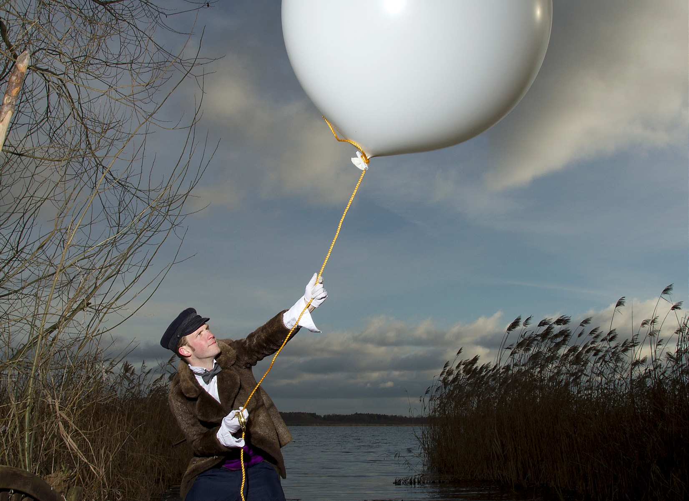
My goal for the project Frivolous is to keep a firm grip on my
innocent fascination with Electronic Music. To continue to engage a
naive spirit that communicates through the integration of
multi-contextual and multi-historical influences. Ideas of sound
re-contextualization (sampling and re-sampling) will be used to create
unorthodox and spell-bound narratives in new and unified sonic spatial
environments. Although the music can often be dance-able, the
intention is to provoke mystery and musical questions in the listener
as the work attempts to illuminate the playfulness and contradictions
of the human condition.
HISTORY
My name is Daniel Gardner. My main project is called Frivolous. I
participated in (and emerged from) the Canadian underground Electronic
Music scene under heavy influence from German Minimal House (Frankfurt
circa late-2000's) and the French and Québécois Mikrohouse movements.
Under the name Frivolous I compose original
Electronic music which has resulted in a substantial body of work
published by various independent labels around the world. Although you
will hear the 'Zeitgeist' of various genres and periods of music in my
work I try not to be bound to any Genre. I
unapologetically borrow influences from cultures and styles throughout
history and weave them into a fluidly evolving work.
In addition to the Frivolous work I've produced music on a commission-basis for podcasts and Radio-stations including Deutschland-Radio, TwenFM and have worked on a freelance basis at the CBC (Canadian Broadcasting Company) in live-sound. Performing this work live at selected special locations; Frivolous (Live) has been featured at such renowned Festivals as Montreux Jazz Festival, MUTEK, Transmediale/CTM and Amsterdam Dance Event. I currently have a studio in Berlin where I continue to record original music, collaborate with other artists and make remixes while also doing live sound capture for independent films and sound-mixing (front of house) at the Konzertreihe am Café Tasso in Berlin-Friedrichshain.
NEWRELEASES
Almost (nearly) complete discography @ Discogs.com
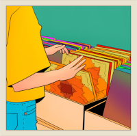
2025 (Chippy Chasers)
Meteorology (Album re-release)
with Hits like "Wasting Time", "Allentown Jail" & "Ostalgia"
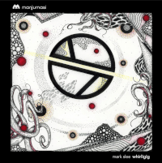
Whirligig (Frivolous Remix)
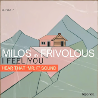
2025 (Leporelo) Milos - I Feel You (Hear That 'Mr. F' Sound)
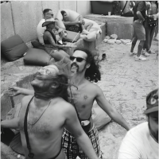
2024 (self-release)
Frivolous - The Wonder of the Feeler
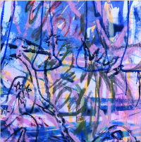
2024 (URSL) Jan Mir, Paul Sandberg, Tomas Svensson
Cans & Coffee (Frivolous Remix)
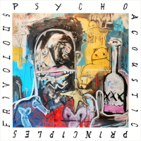
2023 (Compost Records) Frivolous
Psycho Acoustic Principles for the Dancefloor EP
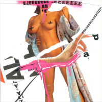
2023 (Compost Records) Felix Labande
We Know Major Tom's A Junkie (Frivolous Remix)
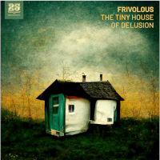
2022 (Bar 25 Music) Frivolous
The Tiny House of Delusion (Album)
2022 (Bar 25 Music) Frivolous
The Tiny House of Delusion (Remixes)
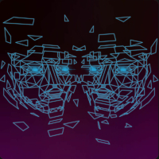
2022 (LNDKHN) Kermesse / Landikhan
Space & Time (Frivolous Remix)
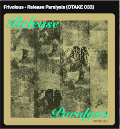
2020 (Otake Records)
Frivolous - Release Paralysis EP
LIVEPERFORMANCE
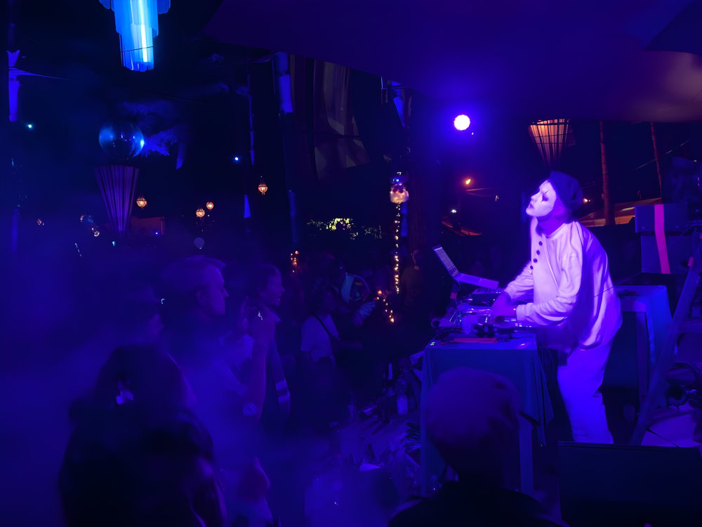
Performance Ideology (& Bookings): Frivolous is not an act which
is concerned by definitions of commercial visibility. Although some
live appearances have happened at notable venues around the world; my
focus remains to refine my performances to special and un-usual
events. My music pivots between dance-music and something designed for
the listener to discover in their own space. Considering that modern
'Club Culture', as it is today, is hard-pressed to provide such a
space for sonic discovery: Frivolous (Live) will appear in carefully
considered locations only. These include regional venues for dedicated
fans who do not have the chance to travel to urban areas, concept
events such as hidden stages at Festivals and Community-Projects where
sonic and performance explorations remain the primary focus. If you
have such an event planned and would like to invite Frivolous (Live)
please reach out to Ulrike Schmeisser uli@uliversum-booking.de
Upcoming Performances: found on my Soundcloud page
Note-worthy past performances of Frivolous live include: The Frisky Whisker - Atlanta (GA), Montréal Jazz Festival, Sub-Sahara (SA), Montreux Jazz Festival, CMYK - Boulder (CO), Vagabundos Ibiza, Kazantip Festival, CTM/Club Transmediale, MUTEK Festival, Fusion Festival, Awakenings/ADE, Miami Winter Music Conference, Panorama Bar/Berghain, Fabric London, DAT Music Conference - Missoula (MT)
PROJECTS
Contraptions: — Adopting cutting-edge production and engineering techniques; live performances under the name Frivolous have been defined by my love of building and hacking weird machines. Examples of hand-made instruments used in recordings and live performances include: Robotic xylophones [Bild 1: setting PureData in play to control complex mechanical systems], Bicycle-powered spring-reverb unit with modulating reverb-coils [Bild 2], "The Knife" contact-microphone knife-instrument [Bild 3], "Double-cable Tub Bass", a "broken-ruler music box" and "The Telephone" singing & monitoring-system [Bild 4] simply called 'the Telephone' which is still in use today.
Sound Engineering:
my excursion into Sound-Engineering has mostly been unguided and
unconventional. Perhaps this is the reason for the unique sound of
Frivolous over the years (see section:
New Releases for links to newer and older
work). My musical journey started with Classical music studies at a
young age. I was enrolled at Royal Conservatory of Music where I
begrudgingly finished my Grade-8: including Music-Theory and History.
After many years of working and touring I finally completed an MA in
2020 in Creative Electronic Music Production at Catalyst Institute in
Berlin. This may sound like a strange order, but it offered me the
opportunity to do something possitive during the Pandemic and gave me
the chance to return to Europe after almost 10 years of living back in
Canada on an small island in the Pacific Northwest.
I also came to this MA program at Catalyst Institute with many
ideological demons in my closet - topics which I was growing ever-more
uncomfortable with in the landscape of modern music production:
especially as it played-out between 2008-2018. The Masters program
taught me how to conduct a Practice-Based Research approach to address
the issues academically. Luckily this gave me the tools to assert my
possition: that the tools being used to achieve perceptual LOUDNESS in
recorded music was also killing music's ability to model or reproduce
"reality-based" spatial sound signatures. After this I conducted a
study (more artistic than scientific) to determine if the music of
this time [which was becoming known to many as "the loudness war
period" of music] was not only evolving aesthetically but doing so in
direct conversation with the "reality" of acoustic spatial sound
design.
Playing with these ideas of reality or, at least, referencing the
human-being's experience; i asserted that common practices in
"reality-based" sound-design had (up to around 2008) been ubiquitous
in sound recordings throughout almost every genre including Electronic
Music. After which time it seemed engineers were placing less emphasis
(consciously or unconsciously) on spatial acoustic modeling of
"reality" in favor of fragmented or "hyper-reality" spatial
dimensionality. This led me to an inevitable question. 'Was the
competition for loudness impeding music's ability to convey the
human-experience OR, perhaps in parallel, does a new sonic
"hyper-reality" allow listeners
to escape (rather than be reminded of) the reality of the current
world state?'
(OH SHIT! that got DARK- but who said Academics aren't dark? I guess
it's because they used to be musicians :-D)
Let's set aside the darkness of this prospect! In my mind, Music is meant to unite, transcend and maybe even iluminate the lightness of being which we often take for granded - proving - that I possess a strong bias towards one of the two options. Can you tell which one? (reality or hyper-reality based sound design?) I guess my listeners can try to determine this answer for themselves.